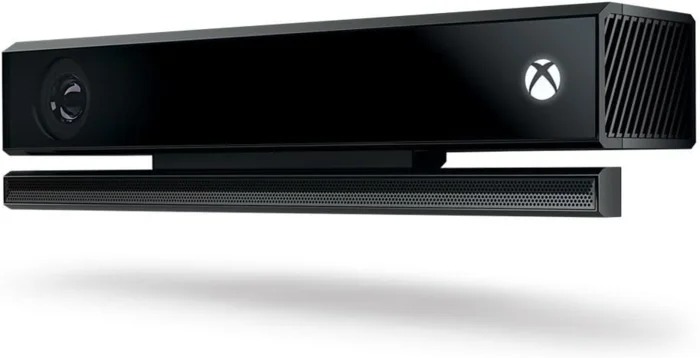

Webcam ou Kinect ?
Toutes les caméras fonctionnent avec headtracking. Le meilleur rapport qualité-prix est une Kinect v2 d'occasion, mais une webcam que vous avez déjà ne coûte rien, et la calibration automatique lui donne aussi une vraie 3D.
| Caméra | Suit la tête grâce à | Distance de la tête | Distance minimale |
|---|---|---|---|
| Kinect v2 (Xbox One) | L'infrarouge : le capteur éclaire lui-même la scène | Mesurée par le capteur de profondeur | Environ 0,5 m (limite matérielle) |
| Kinect v1 (Xbox 360) | La couleur pour repérer le meuble, puis l'infrarouge pour le suivi | Mesurée par le capteur de profondeur | Environ 0,8 m (limite matérielle) |
| Webcam | L'image couleur | Déduite de la largeur de vos épaules | Environ 0,4 à 0,5 m : la tête et les épaules doivent tenir dans l'image ; un objectif grand-angle abaisse cette limite |
Kinect v2 (Xbox One) : le meilleur choix

- Peu chère d'occasion depuis son arrêt par Microsoft : à partir d'environ 20 € sur les petites annonces, par exemple leboncoin ou eBay.
- Elle suit sur son flux infrarouge : le capteur éclaire lui-même la scène, ce qui donne 30 images par seconde dans une salle de jeu plongée dans le noir, là où une webcam peine.
- Son capteur de profondeur mesure la distance de votre tête en millimètres au lieu de l'estimer.
- Prévoyez l'adaptateur Kinect (alimentation et USB 3.0, environ 29 € neuf) si l'annonce ne l'inclut pas : vérifiez avant d'acheter.
- Branchez-la sur un port USB 3.0 dédié à l'arrière de la carte mère. Elle n'apparaît pas derrière un hub partagé.
Kinect v1 (Xbox 360)
Encore moins chère et éprouvée elle aussi. Sa résolution est plus faible, mais elle reste tout à fait utilisable : elle se sert de la couleur pour repérer le meuble, puis suit en infrarouge avec son capteur de profondeur. Sa distance minimale d'environ 0,8 m peut poser problème sur les petits meubles.
Webcam
Une simple webcam fonctionne : la calibration par la lockbar et les rails retrouve sa focale, et la distance de votre tête est déduite de la largeur de vos épaules. Elle suit sur l'image couleur : une salle de jeu sombre lui est donc plus difficile qu'à une Kinect. La tête et les épaules doivent tenir dans l'image.
Fixation

- Placez la caméra sur le haut du fronton (backbox) ou du topper, tournée vers le joueur. Elle doit voir la lockbar et les rails latéraux pour la calibration, et votre tête et vos épaules pour le suivi.
- Un kit d'assortiment de vis 1/4"-20 suffit pour fixer le capteur. Le projet tient à jour une liste Amazon « Headtracking » avec l'adaptateur Kinect et un kit de vis.
- Monter la caméra haut et l'incliner vers le bas l'éloigne de la tête du joueur, ce qui aide face aux distances minimales ci-dessus.
- Si la gauche et la droite (ou le haut et le bas) sont inversées à cause d'un montage inhabituel, utilisez les réglages Invert du plugin.
Minicabs et petits meubles
Le suivi de tête fonctionne sur un minicab, mais la faible distance entre le joueur et la caméra décide de tout.
- Joueur à 60 cm ou plus de la caméra : la Kinect v2 d'occasion reste le meilleur choix.
- Joueur à moins d'environ 60 cm : une webcam grand-angle est la meilleure option. Elle n'a pas de distance plancher stricte, et un minicab vit souvent dans une pièce éclairée, où l'éclairage infrarouge de la Kinect compte moins.
- La Kinect v1 est risquée sur un minicab : son plancher de 0,8 m dépasse souvent toute la distance entre le joueur et le fronton.
- Saisissez la vraie largeur de votre lockbar dans VPX : celle d'un minicab est bien plus étroite que celle d'un flipper classique, et la calibration repose sur cette valeur. Saisissez l'inclinaison de l'écran comme sur un meuble classique.
- La détection de la lockbar et des rails fonctionne quelle que soit la taille du meuble, et une caméra proche les voit même plus grands. Le modèle n'a encore jamais vu de minicab : votre relevé est particulièrement bienvenu.
Plus de détails : docs/MINICAB.md.